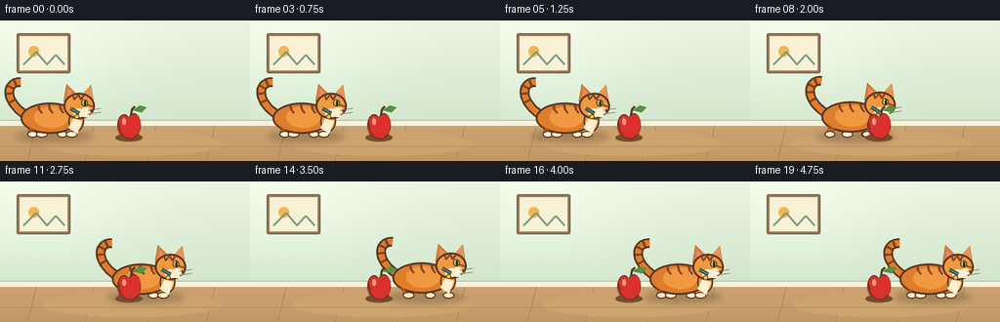
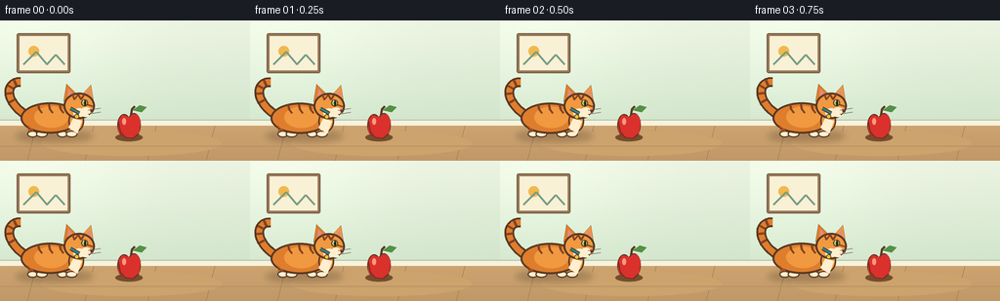

CODING AGENTS AS PIXEL WORLD MODELS
traex/GPT-5.6-Sol · instance_preservation_0006
点击播放 · 原生 RGB 像素
逐轮保存的候选
回放视频、检查图与代码变化。
每份候选均可单独播放。实际图片检查记录在下方工具轨迹中。
候选 01播放与检查图
点击播放 · 原生 RGB 像素


展开代码变化
--- 上一保存版本
+++ 本次保存版本
@@ -0,0 +1,183 @@
+from pathlib import Path
+import math
+import numpy as np
+from PIL import Image, ImageDraw, ImageFilter
+import artifact_io
+
+W, H, N = 256, 144, 20
+S = 4
+rng = np.random.default_rng(12)
+
+# Drawing helpers in logical pixels, rendered at 4x for smooth contours.
+def sc(v): return int(round(v*S))
+def box(b): return tuple(sc(v) for v in b)
+def pts(seq): return [(sc(x), sc(y)) for x,y in seq]
+def bezier(p0,p1,p2,p3,n=24):
+ out=[]
+ for t in np.linspace(0,1,n):
+ u=1-t
+ out.append((u**3*p0[0]+3*u*u*t*p1[0]+3*u*t*t*p2[0]+t**3*p3[0],
+ u**3*p0[1]+3*u*u*t*p1[1]+3*u*t*t*p2[1]+t**3*p3[1]))
+ return out
+
+def line(d, xy, fill, width, joint='curve'):
+ d.line(pts(xy), fill=fill, width=sc(width), joint=joint)
+
+def ellipse(d,b,fill,outline=None,width=1): d.ellipse(box(b),fill=fill,outline=outline,width=sc(width) if outline else 1)
+def polygon(d,p,fill,outline=None): d.polygon(pts(p),fill=fill,outline=outline)
+def rounded(d,b,r,fill,outline=None,width=1): d.rounded_rectangle(box(b),radius=sc(r),fill=fill,outline=outline,width=sc(width) if outline else 1)
+
+# Constant softly textured interior background.
+yy, xx = np.mgrid[0:H*S, 0:W*S]
+wall_top=np.array([235,244,226.],float); wall_bot=np.array([210,229,204.],float)
+t=np.minimum(yy/(105*S),1)[...,None]
+bg=wall_top*(1-t)+wall_bot*t
+# warm sunlight from upper left
+light=np.exp(-((xx-35*S)**2/(2*(75*S)**2)+(yy-28*S)**2/(2*(55*S)**2)))[...,None]
+bg += 10*light
+noise=np.repeat(rng.normal(0,0.9,(H*S,W*S,1)),3,axis=2)
+bg=np.clip(bg+noise,0,255).astype(np.uint8)
+base_bg=Image.fromarray(bg,'RGB')
+db=ImageDraw.Draw(base_bg)
+# wall panels / quiet decorative details
+# framed minimalist picture
+db.rounded_rectangle(box((17,13,72,54)), radius=sc(2), fill=(151,119,86), outline=(115,91,67), width=sc(1))
+db.rectangle(box((20,16,69,51)), fill=(248,241,214))
+db.ellipse(box((29,26,40,37)), fill=(242,184,77))
+db.line(pts([(24,45),(37,32),(48,45),(57,35),(66,45)]), fill=(119,157,132), width=sc(2))
+# Baseboard and wood floor
+db.rectangle(box((0,102,256,108)), fill=(247,242,220))
+db.line(pts([(0,102),(256,102)]), fill=(176,193,166), width=sc(1))
+for y in range(sc(108),H*S):
+ q=(y/S-108)/(H-108)
+ col=(int(205-13*q),int(164-12*q),int(112-9*q))
+ db.line([(0,y),(W*S,y)],fill=col,width=1)
+for x in [37,96,160,220]:
+ db.line(pts([(x,108),(x-9,144)]), fill=(166,128,88), width=sc(.7))
+db.line(pts([(0,129),(256,129)]), fill=(181,140,95), width=sc(.7))
+# subtle floor highlight
+db.ellipse(box((42,113,227,139)), fill=(204,162,109))
+# redraw translucent look via floor lines on top
+db.line(pts([(0,129),(256,129)]), fill=(181,140,95), width=sc(.7))
+
+CAT_OUT=(89,55,34)
+ORANGE=(222,126,45)
+ORANGE_L=(240,153,64)
+ORANGE_D=(184,88,31)
+STRIPE=(130,66,34)
+CREAM=(255,239,207)
+TEAL=(40,137,139)
+
+def draw_cat(im, cx, body_y, phase, moving, frame):
+ # shadow under one and only one cat
+ sh=Image.new('RGBA',im.size,(0,0,0,0)); ds=ImageDraw.Draw(sh)
+ ds.ellipse(box((cx-36,113,cx+43,124)),fill=(79,54,35,75))
+ sh=sh.filter(ImageFilter.GaussianBlur(sc(3.2)))
+ im.paste(sh,(0,0),sh)
+ d=ImageDraw.Draw(im)
+
+ # Tail behind body: unmistakable upward curved striped tail.
+ tail=bezier((cx-27,body_y-9),(cx-48,body_y-23),(cx-46,body_y-43),(cx-31,body_y-42),28)
+ line(d,tail,CAT_OUT,10)
+ line(d,tail,ORANGE,6.3)
+ # tail rings following selected short cross strokes
+ for j in (8,13,18,23):
+ x,y=tail[j]; x0,y0=tail[max(0,j-1)]; x1,y1=tail[min(len(tail)-1,j+1)]
+ dx,dy=x1-x0,y1-y0; L=max(.1,math.hypot(dx,dy)); nx,ny=-dy/L,dx/L
+ line(d,[(x-nx*3.0,y-ny*3.0),(x+nx*3.0,y+ny*3.0)],STRIPE,2.4)
+
+ # Four animated legs. Gait is subtle but readable.
+ swing = math.sin(phase) * (5.0 if moving else 0.3)
+ leg_specs=[(-19,-swing*.75, (196,102,36)), (11,swing*.75,(195,98,34)), (-10,swing,ORANGE), (21,-swing,ORANGE_L)]
+ # Rear legs first, then near legs; top disappears naturally under torso.
+ for idx,(lx,dx,col) in enumerate(leg_specs):
+ top=body_y+4
+ footx=cx+lx+dx
+ bottom=119
+ width=8 if idx<2 else 9
+ polygon(d,[(cx+lx-width/2,top),(cx+lx+width/2,top),(footx+width/2-1,bottom-3),(footx-width/2,bottom-3)],col,CAT_OUT)
+ ellipse(d,(footx-width/2-1,bottom-6,footx+width/2+2,bottom+1),CREAM,CAT_OUT,1.2)
+
+ # Main body and warm highlight.
+ ellipse(d,(cx-31,body_y-21,cx+29,body_y+11),ORANGE,CAT_OUT,2)
+ ellipse(d,(cx-17,body_y-17,cx+18,body_y+5),ORANGE_L)
+ # haunch contour
+ line(d,[(cx-24,body_y+3),(cx-18,body_y+8)],ORANGE_D,1.2)
+ # stable identifying three body stripes
+ for off,h in [(-11,8),(0,10),(11,7)]:
+ line(d,[(cx+off-2,body_y-19),(cx+off-1,body_y-14),(cx+off+2,body_y-10)],STRIPE,2.2)
+
+ # Neck / white bib behind head.
+ ellipse(d,(cx+18,body_y-13,cx+34,body_y+9),ORANGE_L,CAT_OUT,1.5)
+ polygon(d,[(cx+23,body_y-5),(cx+32,body_y-2),(cx+27,body_y+11),(cx+18,body_y+5)],CREAM)
+
+ # Head, always facing right. Ears preserve exact silhouette frame-to-frame.
+ hx,hy=cx+29,body_y-17
+ polygon(d,[(hx-16,hy-5),(hx-13,hy-23),(hx-2,hy-12)],ORANGE,CAT_OUT)
+ polygon(d,[(hx+3,hy-12),(hx+12,hy-22),(hx+15,hy-3)],ORANGE_L,CAT_OUT)
+ polygon(d,[(hx-12,hy-9),(hx-11,hy-18),(hx-5,hy-11)],(229,139,123))
+ polygon(d,[(hx+7,hy-11),(hx+11,hy-18),(hx+12,hy-7)],(229,139,123))
+ ellipse(d,(hx-16,hy-14,hx+16,hy+13),ORANGE_L,CAT_OUT,2)
+ # forehead tabby M and cheek stripe
+ line(d,[(hx-7,hy-13),(hx-5,hy-7),(hx-1,hy-12),(hx+2,hy-7),(hx+5,hy-12)],STRIPE,1.7)
+ line(d,[(hx+8,hy-2),(hx+14,hy)],STRIPE,1.5)
+ # white muzzle patches
+ ellipse(d,(hx+1,hy+1,hx+13,hy+11),CREAM)
+ ellipse(d,(hx-6,hy+2,hx+6,hy+11),CREAM)
+ # eye: blink briefly after arrival, otherwise bright green eye
+ blink = (frame==18)
+ if blink:
+ line(d,[(hx+2,hy-3),(hx+8,hy-3)],CAT_OUT,1.3)
+ else:
+ ellipse(d,(hx+2,hy-7,hx+9,hy), (170,203,87),CAT_OUT,1)
+ ellipse(d,(hx+5,hy-6,hx+7,hy-.5), (39,35,27))
+ ellipse(d,(hx+4,hy-6,hx+5,hy-5),(255,255,232))
+ # nose, mouth and whiskers
+ polygon(d,[(hx+11,hy+3),(hx+15,hy+4),(hx+12,hy+7)],(104,54,51))
+ line(d,[(hx+12,hy+7),(hx+10,hy+9)],CAT_OUT,.8)
+ for wy in (4,8):
+ line(d,[(hx+9,hy+wy),(hx+22,hy+wy-2)],(107,82,64),.65)
+ # teal collar and permanent golden tag as identity anchors
+ line(d,[(cx+20,body_y-15),(cx+29,body_y-10)],CAT_OUT,4.1)
+ line(d,[(cx+20,body_y-15),(cx+29,body_y-10)],TEAL,2.3)
+ ellipse(d,(cx+24,body_y-9,cx+29,body_y-4),(246,194,54),CAT_OUT,.7)
+
+
+def draw_apple(im):
+ # Fixed apple landmark in foreground; its complete stillness makes relation clear.
+ d=ImageDraw.Draw(im)
+ ellipse(d,(118,116,146,124),(117,77,45))
+ # apple silhouette assembled with lobes, outlined for clear segmentation
+ ellipse(d,(120,96,134,119),(205,47,43), (105,48,35),1.2)
+ ellipse(d,(130,95,144,119),(225,54,48), (105,48,35),1.2)
+ polygon(d,[(121,103),(125,97),(133,99),(140,96),(144,103),(142,116),(136,121),(127,120),(121,114)],(218,49,44))
+ # contour accent and shine
+ line(d,[(121,103),(123,114),(128,120),(136,121),(142,116)],(111,48,35),1.15)
+ line(d,[(134,97),(135,91),(138,88)],(87,61,34),2.2)
+ polygon(d,[(136,92),(143,87),(150,89),(145,94)],(83,146,68),(52,101,47))
+ ellipse(d,(125,100,129,107),(255,150,124))
+
+frames=[]
+for f in range(N):
+ # Hold clear initial relationship, ease through crossing, then hold final relationship.
+ if f <= 2:
+ p=0.0
+ elif f >= 16:
+ p=1.0
+ else:
+ u=(f-2)/14.0
+ p=u*u*(3-2*u)
+ cx=52 + (184-52)*p
+ moving=(f>=3 and f<=15)
+ # two-step walk cycle, with a small physical bob only during transit
+ phase=2*math.pi*(f-3)/4.0
+ bob=(-1.35*abs(math.sin(phase))) if moving else (0.25*math.sin(f*.8))
+ frame=base_bg.copy()
+ draw_cat(frame,cx,105+bob,phase,moving,f)
+ draw_apple(frame) # foreground occlusion as the cat passes behind it
+ frame=frame.resize((W,H),Image.Resampling.LANCZOS)
+ frames.append(np.asarray(frame,dtype=np.uint8))
+
+frames=np.stack(frames)
+artifact_io.save(frames,Path(__file__).resolve().parent)
+print('saved',frames.shape,frames.dtype)
可观测工具轨迹
实际执行的命令与返回图片。
命令 1exit 0
/bin/bash -lc "cat prompt.txt && printf '\\n--- RULES ---\\n' && cat GENERATION_RULES.md && printf '\\n--- SPEC ---\\n' && cat task_spec.json"
命令 2exit 0
/bin/bash -lc "find . -maxdepth 2 -type f -printf '%p\\n' | sort"
命令 3exit 0
/bin/bash -lc 'cat artifact_io.py'
命令 4exit 0
/bin/bash -lc "cat > generate.py <<'PY'
from pathlib import Path
import math
import numpy as np
from PIL import Image, ImageDraw, ImageFilter
import artifact_io
W, H, N = 256, 144, 20
S = 4
rng = np.random.default_rng(12)
# Drawing helpers in logical pixels, rendered at 4x for smooth contours.
def sc(v): return int(round(v*S))
def box(b): return tuple(sc(v) for v in b)
def pts(seq): return [(sc(x), sc(y)) for x,y in seq]
def bezier(p0,p1,p2,p3,n=24):
out=[]
for t in np.linspace(0,1,n):
u=1-t
out.append((u**3*p0[0]+3*u*u*t*p1[0]+3*u*t*t*p2[0]+t**3*p3[0],
u**3*p0[1]+3*u*u*t*p1[1]+3*u*t*t*p2[1]+t**3*p3[1]))
return out
def line(d, xy, fill, width, joint='curve'):
d.line(pts(xy), fill=fill, width=sc(width), joint=joint)
def ellipse(d,b,fill,outline=None,width=1): d.ellipse(box(b),fill=fill,outline=outline,width=sc(width) if outline else 1)
def polygon(d,p,fill,outline=None): d.polygon(pts(p),fill=fill,outline=outline)
def rounded(d,b,r,fill,outline=None,width=1): d.rounded_rectangle(box(b),radius=sc(r),fill=fill,outline=outline,width=sc(width) if outline else 1)
# Constant softly textured interior background.
yy, xx = np.mgrid[0:H*S, 0:W*S]
wall_top=np.array([235,244,226.],float); wall_bot=np.array([210,229,204.],float)
t=np.minimum(yy/(105*S),1)[...,None]
bg=wall_top*(1-t)+wall_bot*t
# warm sunlight from upper left
light=np.exp(-((xx-35*S)**2/(2*(75*S)**2)+(yy-28*S)**2/(2*(55*S)**2)))[...,None]
bg += 10*light
noise=np.repeat(rng.normal(0,0.9,(H*S,W*S,1)),3,axis=2)
bg=np.clip(bg+noise,0,255).astype(np.uint8)
base_bg=Image.fromarray(bg,'RGB')
db=ImageDraw.Draw(base_bg)
# wall panels / quiet decorative details
# framed minimalist picture
db.rounded_rectangle(box((17,13,72,54)), radius=sc(2), fill=(151,119,86), outline=(115,91,67), width=sc(1))
db.rectangle(box((20,16,69,51)), fill=(248,241,214))
db.ellipse(box((29,26,40,37)), fill=(242,184,77))
db.line(pts([(24,45),(37,32),(48,45),(57,35),(66,45)]), fill=(119,157,132), width=sc(2))
# Baseboard and wood floor
db.rectangle(box((0,102,256,108)), fill=(247,242,220))
db.line(pts([(0,102),(256,102)]), fill=(176,193,166), width=sc(1))
for y in range(sc(108),H*S):
q=(y/S-108)/(H-108)
col=(int(205-13*q),int(164-12*q),int(112-9*q))
db.line([(0,y),(W*S,y)],fill=col,width=1)
for x in [37,96,160,220]:
db.line(pts([(x,108),(x-9,144)]), fill=(166,128,88), width=sc(.7))
db.line(pts([(0,129),(256,129)]), fill=(181,140,95), width=sc(.7))
# subtle floor highlight
db.ellipse(box((42,113,227,139)), fill=(204,162,109))
# redraw translucent look via floor lines on top
db.line(pts([(0,129),(256,129)]), fill=(181,140,95), width=sc(.7))
CAT_OUT=(89,55,34)
ORANGE=(222,126,45)
ORANGE_L=(240,153,64)
ORANGE_D=(184,88,31)
STRIPE=(130,66,34)
CREAM=(255,239,207)
TEAL=(40,137,139)
def draw_cat(im, cx, body_y, phase, moving, frame):
# shadow under one and only one cat
sh=Image.new('RGBA',im.size,(0,0,0,0)); ds=ImageDraw.Draw(sh)
ds.ellipse(box((cx-36,113,cx+43,124)),fill=(79,54,35,75))
sh=sh.filter(ImageFilter.GaussianBlur(sc(3.2)))
im.paste(sh,(0,0),sh)
d=ImageDraw.Draw(im)
# Tail behind body: unmistakable upward curved striped tail.
tail=bezier((cx-27,body_y-9),(cx-48,body_y-23),(cx-46,body_y-43),(cx-31,body_y-42),28)
line(d,tail,CAT_OUT,10)
line(d,tail,ORANGE,6.3)
# tail rings following selected short cross strokes
for j in (8,13,18,23):
x,y=tail[j]; x0,y0=tail[max(0,j-1)]; x1,y1=tail[min(len(tail)-1,j+1)]
dx,dy=x1-x0,y1-y0; L=max(.1,math.hypot(dx,dy)); nx,ny=-dy/L,dx/L
line(d,[(x-nx*3.0,y-ny*3.0),(x+nx*3.0,y+ny*3.0)],STRIPE,2.4)
# Four animated legs. Gait is subtle but readable.
swing = math.sin(phase) * (5.0 if moving else 0.3)
leg_specs=[(-19,-swing*.75, (196,102,36)), (11,swing*.75,(195,98,34)), (-10,swing,ORANGE), (21,-swing,ORANGE_L)]
# Rear legs first, then near legs; top disappears naturally under torso.
for idx,(lx,dx,col) in enumerate(leg_specs):
top=body_y+4
footx=cx+lx+dx
bottom=119
width=8 if idx<2 else 9
polygon(d,[(cx+lx-width/2,top),(cx+lx+width/2,top),(footx+width/2-1,bottom-3),(footx-width/2,bottom-3)],col,CAT_OUT)
ellipse(d,(footx-width/2-1,bottom-6,footx+width/2+2,bottom+1),CREAM,CAT_OUT,1.2)
# Main body and warm highlight.
ellipse(d,(cx-31,body_y-21,cx+29,body_y+11),ORANGE,CAT_OUT,2)
ellipse(d,(cx-17,body_y-17,cx+18,body_y+5),ORANGE_L)
# haunch contour
line(d,[(cx-24,body_y+3),(cx-18,body_y+8)],ORANGE_D,1.2)
# stable identifying three body stripes
for off,h in [(-11,8),(0,10),(11,7)]:
line(d,[(cx+off-2,body_y-19),(cx+off-1,body_y-14),(cx+off+2,body_y-10)],STRIPE,2.2)
# Neck / white bib behind head.
ellipse(d,(cx+18,body_y-13,cx+34,body_y+9),ORANGE_L,CAT_OUT,1.5)
polygon(d,[(cx+23,body_y-5),(cx+32,body_y-2),(cx+27,body_y+11),(cx+18,body_y+5)],CREAM)
# Head, always facing right. Ears preserve exact silhouette frame-to-frame.
hx,hy=cx+29,body_y-17
polygon(d,[(hx-16,hy-5),(hx-13,hy-23),(hx-2,hy-12)],ORANGE,CAT_OUT)
polygon(d,[(hx+3,hy-12),(hx+12,hy-22),(hx+15,hy-3)],ORANGE_L,CAT_OUT)
polygon(d,[(hx-12,hy-9),(hx-11,hy-18),(hx-5,hy-11)],(229,139,123))
polygon(d,[(hx+7,hy-11),(hx+11,hy-18),(hx+12,hy-7)],(229,139,123))
ellipse(d,(hx-16,hy-14,hx+16,hy+13),ORANGE_L,CAT_OUT,2)
# forehead tabby M and cheek stripe
line(d,[(hx-7,hy-13),(hx-5,hy-7),(hx-1,hy-12),(hx+2,hy-7),(hx+5,hy-12)],STRIPE,1.7)
line(d,[(hx+8,hy-2),(hx+14,hy)],STRIPE,1.5)
# white muzzle patches
ellipse(d,(hx+1,hy+1,hx+13,hy+11),CREAM)
ellipse(d,(hx-6,hy+2,hx+6,hy+11),CREAM)
# eye: blink briefly after arrival, otherwise bright green eye
blink = (frame==18)
if blink:
line(d,[(hx+2,hy-3),(hx+8,hy-3)],CAT_OUT,1.3)
else:
ellipse(d,(hx+2,hy-7,hx+9,hy), (170,203,87),CAT_OUT,1)
ellipse(d,(hx+5,hy-6,hx+7,hy-.5), (39,35,27))
ellipse(d,(hx+4,hy-6,hx+5,hy-5),(255,255,232))
# nose, mouth and whiskers
polygon(d,[(hx+11,hy+3),(hx+15,hy+4),(hx+12,hy+7)],(104,54,51))
line(d,[(hx+12,hy+7),(hx+10,hy+9)],CAT_OUT,.8)
for wy in (4,8):
line(d,[(hx+9,hy+wy),(hx+22,hy+wy-2)],(107,82,64),.65)
# teal collar and permanent golden tag as identity anchors
line(d,[(cx+20,body_y-15),(cx+29,body_y-10)],CAT_OUT,4.1)
line(d,[(cx+20,body_y-15),(cx+29,body_y-10)],TEAL,2.3)
ellipse(d,(cx+24,body_y-9,cx+29,body_y-4),(246,194,54),CAT_OUT,.7)
def draw_apple(im):
# Fixed apple landmark in foreground; its complete stillness makes relation clear.
d=ImageDraw.Draw(im)
ellipse(d,(118,116,146,124),(117,77,45))
# apple silhouette assembled with lobes, outlined for clear segmentation
ellipse(d,(120,96,134,119),(205,47,43), (105,48,35),1.2)
ellipse(d,(130,95,144,119),(225,54,48), (105,48,35),1.2)
polygon(d,[(121,103),(125,97),(133,99),(140,96),(144,103),(142,116),(136,121),(127,120),(121,114)],(218,49,44))
# contour accent and shine
line(d,[(121,103),(123,114),(128,120),(136,121),(142,116)],(111,48,35),1.15)
line(d,[(134,97),(135,91),(138,88)],(87,61,34),2.2)
polygon(d,[(136,92),(143,87),(150,89),(145,94)],(83,146,68),(52,101,47))
ellipse(d,(125,100,129,107),(255,150,124))
frames=[]
for f in range(N):
# Hold clear initial relationship, ease through crossing, then hold final relationship.
if f <= 2:
p=0.0
elif f >= 16:
p=1.0
else:
u=(f-2)/14.0
p=u*u*(3-2*u)
cx=52 + (184-52)*p
moving=(f>=3 and f<=15)
# two-step walk cycle, with a small physical bob only during transit
phase=2*math.pi*(f-3)/4.0
bob=(-1.35*abs(math.sin(phase))) if moving else (0.25*math.sin(f*.8))
frame=base_bg.copy()
draw_cat(frame,cx,105+bob,phase,moving,f)
draw_apple(frame) # foreground occlusion as the cat passes behind it
frame=frame.resize((W,H),Image.Resampling.LANCZOS)
frames.append(np.asarray(frame,dtype=np.uint8))
frames=np.stack(frames)
artifact_io.save(frames,Path(__file__).resolve().parent)
print('saved',frames.shape,frames.dtype)
PY
python generate.py
ls -lh pixels.npz inspection.png index.html frames/00.png frames/19.png"命令 5exit 0
/bin/bash -lc "python - <<'PY'
from PIL import Image
import numpy as np, json
from pathlib import Path
p=Path('.')
fs=sorted((p/'frames').glob('*.png'))
assert len(fs)==20
ims=np.stack([np.asarray(Image.open(x)) for x in fs])
assert ims.shape==(20,144,256,3) and ims.dtype==np.uint8
z=np.load('pixels.npz')['pixels']
assert z.shape==(144,256,20)
# Basic temporal checks: held endpoints but no duplicate frozen output, and movement occurs.
diff=np.mean(np.abs(ims[1:].astype(int)-ims[:-1].astype(int)),axis=(1,2,3))
print('validated frames:',ims.shape, ims.dtype)
print('mean frame deltas:',np.round(diff,2).tolist())
print('all required:',all((p/x).exists() for x in ['pixels.npz','index.html','inspection.png','transition_check.png','generate.py']))
PY"命令 6exit 0
/bin/bash -lc 'python -m py_compile generate.py && git status --short 2>/dev/null || true'
保存候选 1 份；完成命令 6 次；可验证图片返回 0 张。原始 API 响应与完整日志保留在本地。